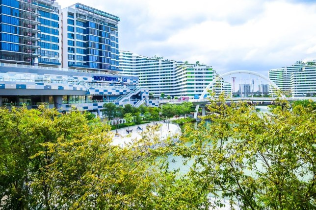
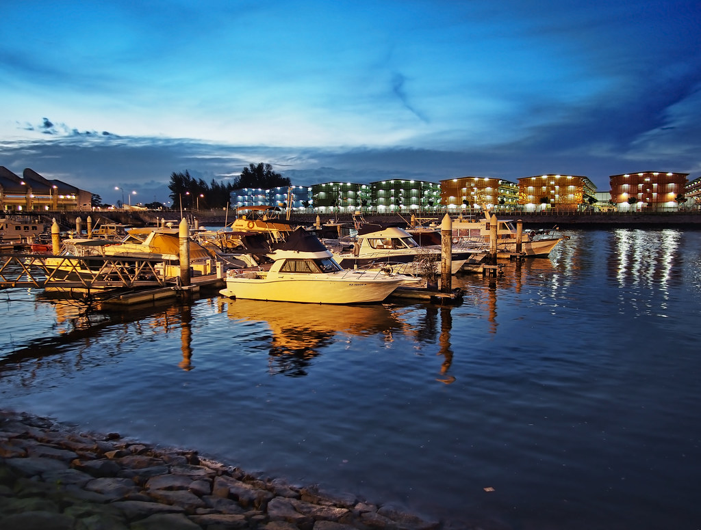
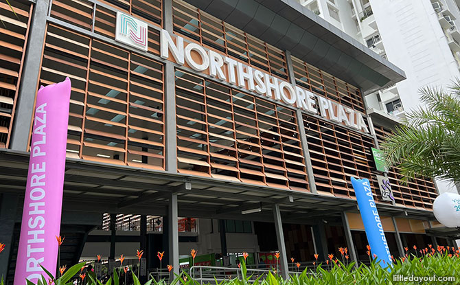
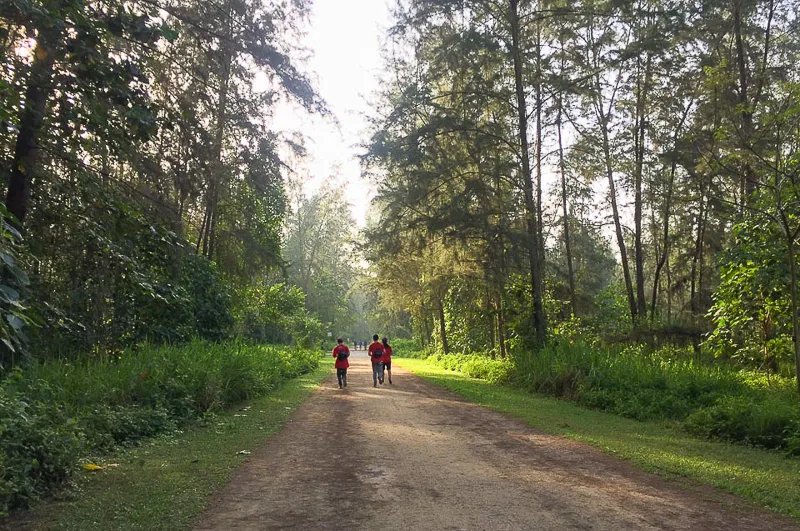
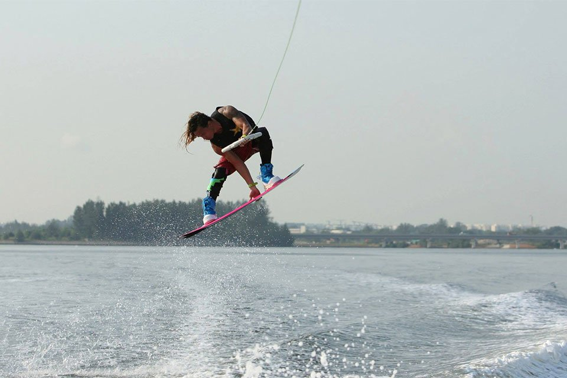
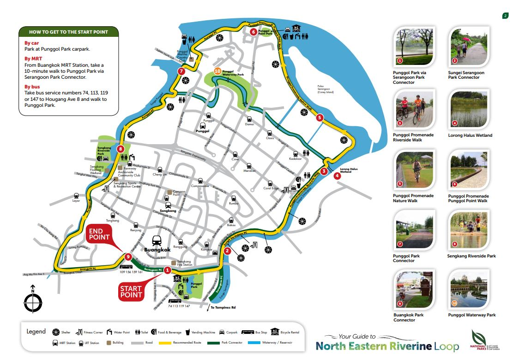
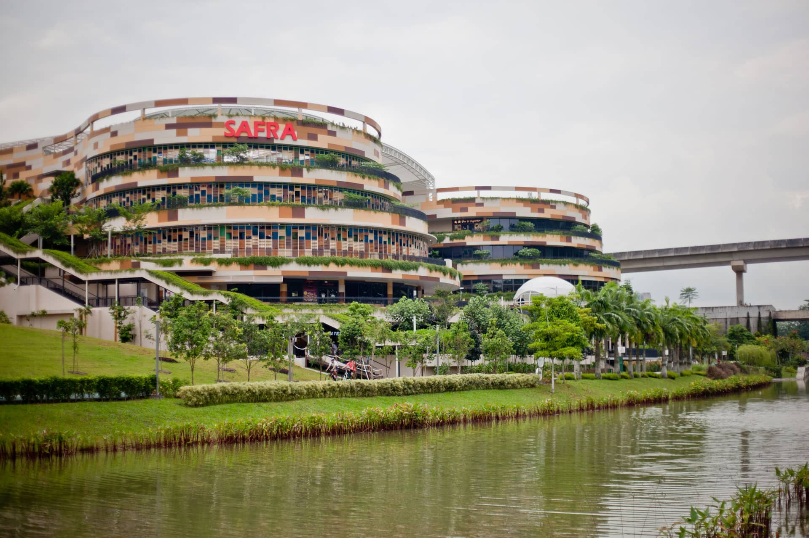

Punggol Waterway Park
A place with much to do, see & eat. Come visit today!
A place with much to do, see & eat. Come visit today!

Waterway Point is a four-storey retail and lifestyle hub located in the heart of Punggol, beside Punggol MRT/LRT station. It is the retail component of Watertown, Singapore’s first integrated waterfront residential and retail development by the consortium of Frasers Property Limited, Far East Organization and Sekisui House Ltd. Watertown features a 992-residential unit development in addition to the retail and lifestyle hub.
Waterway Point offers a diverse range of retail, dining, entertainment and education offerings. Waterway Point is the flagship waterfront leisure destination for Punggol’s residents and visitors from across the island.

The Punggol Settlement is a bespoke food and beverage specialised development concept envisioned and materialised by its developer, The Colonial Settlement Pte. Ltd. (a wholly owned subsidiary of Fragrance Group Limited), to revive old Punggol and bring it back to its former glory and more as the dining destination of the North-Eastern sunrise pinnacle of our tropical island city state.
Rapid urban planning with land acquisition / relocation policies by the state authorities of the past 2 decades had displaced the food & beverage geocentric of timeless Punggol away from its original seafront pinnacle.
Sited on the original general area of this vintage food and beverage location of the days of yore in pre-millennial Singapore, The Punggol Settlement is Punggol re-established, rebooted, and ready for a wave of delectable dining and entertaining eats, dollops of desserts and rejuvenating recreation - all to be experienced in harmonious symbiosis in natural cohesion with the flora, fauna, and vast peripherally encompassing seafront of the redeveloped and constantly evolving Punggol Point of today...
Punggol East Container Park is an eatery cum amusement park located in the eastern corner of Punggol, easily assessible by bus and located a 5-minute walk from the LRT Station, Riverside.
Featuring food of various cuisines, visitors will be spoilt for choice, from the well-known eatery Big Fish Small Fish, to the bespoke cafe Whisk and Paddle, to even a well known Korean cafe. Be prepared to eat till your bellies are full! But dont's fret as visitors can easily take a walk at the nearby park connector to burn of all the calories taken in
Come down today to see and find out more!

You don't pay a huge bundle to enjoy country club facilities and amenities. As you stroll in, decide what facilities you want to use and pay for their use. It's that simple.
Marina Country Club is an extension of your home, this is an extraordinary place where you can relax, dine, unwind, chill out, wakeboard, or participate in sea sport activities and relish the company of friends while your children are simply bowled over endless hours of fun and play.
Savor the very best of culinary treasures from an amazing array of restaurants with spectacular sea views and attractive menu pricing. Imagine the ecstasy of a steamboat dinner or seafood dinner on the Broadwalk with the setting sun beyond the horizon. Imagine savoring succulent and delectable seafood dinner in the cool comfort of airconditioned dining. Aren't you hungry?

Located in the heart of Northshore District in Punggol Eco-Town, Northshore Plaza is the first seafront New Generation Neighbourhood Centre to be built in an HDB estate, offering residents a unique waterfront shopping experience. It houses a supermarket, food court, restaurants, eateries, shops, childcare centre, and enrichment centres.
Beyond commercial facilities, Northshore Plaza is also designed around a comprehensive network of community spaces and parks. The community spine seamlessly connects Northshore Plaza to the residential blocks and the Samudera LRT station. This naturally-ventilated corridor extends alongside the common green to Punggol Promenade, providing convenient and sheltered access to the waterfront.

Besides being rich in history, Coney Island Park houses a wide variety of habitats, including coastal forests, grasslands, mangroves, and casuarina woodlands. It is home to a wide variety of fauna and flora, some of which are critically endangered. Some plants at the park are presumed nationally extinct in the wild.
Start exploring the forest and mangrove habitats on the newly built boardwalk and move on to the beach which can be accessed at five locations. You may also ride through the island along the 2.5 km Coney Island Park Connector, taking in the beautiful promenade view of the Serangoon Reservoir.

From fast pumping water-skiing and wakeboarding to spectacular diving trips to the serenity of deep-sea fishing and unforgettable sunset cruise Ð there is something for every sun and sea enthusiast. Marina Country Club boasts of hosting the largest wakeboarding hub in Singapore. Well, there is no lack of sea sports accessories and apparel. Browse and buy what suits you best from the shops that line the Marina Walk.

Built around the section of Punggol Waterway and located along Sentul Crescent, Punggol Waterway Park is a great place for park users to enjoy a fun-filled day of leisure activities.
Fitness enthusiasts can jog or cycle on the well-maintained tracks along the promenade at both sides of the waterway while admiring the surrounding view. Alternatively, sit on the many benches placed around the park and enjoy the breeze as you listen to the soothing sounds of running, trickling, splashing and cascading water. While doing so, look out for the various types of birds that can be spotted along the Waterway.
Punggol Waterway Park is one of four parks linked by the North Eastern Riverine Loop of the Park Connector Network. The Waterway runs through the Punggol Waterway Park, and serves to increase park and water frontage for the housing estate while providing a green respite for residents.

Nestled in the scenic Punggol Waterway Park, SAFRA Punggol is the first eco-friendly SAFRA club to receive the prestigious Building and Construction Authority Green Mark Platinum award.
Home to one of the largest indoor playground, kids can enjoy their time here while their fathers enjoy the SAFRA facilities as NSMEN. Those who are childless can also head to the bowling alley to play a few rounds or enjoy the various eateries at SAFRA. With much to do here, one would find themselves spending hours at SAFRA Punggol.
Punggol was a fishing village occupied predominantly by Malay settlers. As more Chinese immigrants settled in Punggol, they engaged in plantation work, poultry farming, and pig-rearing activities.
The Punggol of today is very different from its rural past. The blueprint for Punggol 21 was first unveiled in 1996 by the former Prime Minister, Mr Goh Chok Tong, with the vision of developing Punggol 21 as ‘A Waterfront Town of the 21st Century’.
In September 2007, Prime Minister Lee Hsien Loong unveiled new plans under the Remaking Our Heartland (ROH) programme. Punggol was selected as one of the pilot towns under the ROH programme, with new strategies and plans formulated to reinforce and realise the vision of Punggol as a waterfront town. One of the plans was to dam up Sungei Serangoon and Sungei Punggol, and introduce a man-made waterway through the town to connect these 2 reservoirs, opening up opportunities for waterfront living.
In 2010, Punggol was selected for development as Singapore's first Eco-Town, to enhance the living environment in its estates and encourage residents to do their part for the environment. Punggol also serves as a ‘living laboratory’ for HDB to test new ideas and technologies in sustainable development, and integrate urban solutions to create a green living environment. One of the first eco-friendly housing projects in the town was Treelodge@Punggol.
The vision for waterfront living was realised with the development of housing projects along Punggol Waterway such as Waterway Terraces I and II, and Waterway Ridges. In 2014, Punggol Northshore was announced as the first nature-centric district to test-bed smart technologies in public housing. These include an intelligent parking demand monitoring system, sensor-equipped lighting in common areas and smart waste management. Housing projects in the newest Punggol Point District, including Punggol Point Crown and Punggol Point Cove, were launched in 2019. Their designs pay tribute to the town’s rich heritage as a rustic fishing village.